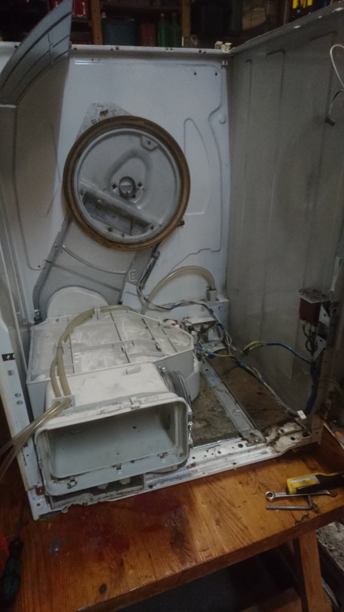
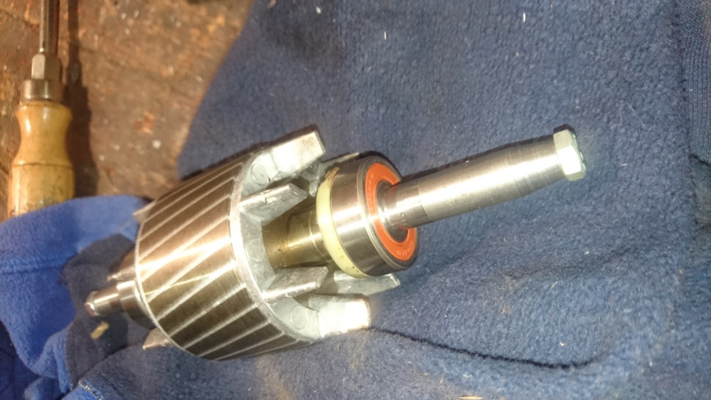

tgauweiler / Miele Dryer Bearing
Introduction
Our Miele Novotronic T654C dryer was only running for some seconds before stopping and showing “Clean Airways”. Needless to say this didn’t help.
Repair
- Open the case by removing the screws in the front and in the back.
- Notice in a test run that the drum is only twitching.
- Suspect a broken starting capacitor, replace, didn’t fix it.

- Remove all the things to get to the motor.
- And some more just for really cleaning all the air ways with pressured air.
- Notice that one of the bearings of the motor is completely jammed.
- Remove the fan from the driveshaft. This was really difficult, because they are pressed together and the plastic of the fan doesn’t like any heat. Lots of WD40 helped to get it finally lose.
- Remove the bearing with appropriate force.

- Check that the housing is clean.
- Use professional pressing tool (pipe) to add the two new bearing to the drive shaft.

- Assemble motor.
- Add fan and housing.
- Reassemble dryer.
- Drum spins again freely.
- “Clean Airways” persists.
- Spend days checking all sensors and circuit boards.
- Find some thread in the internet and really clean all filters with water and a brush, even though they look clean.
- Error gone.
Conclusion
- Two nearly broken bearings, which broke while testing.
- Bearings are really really hard to get off from the driving shaft.
- Original error caused by invisible washing agent residues in the air filter.